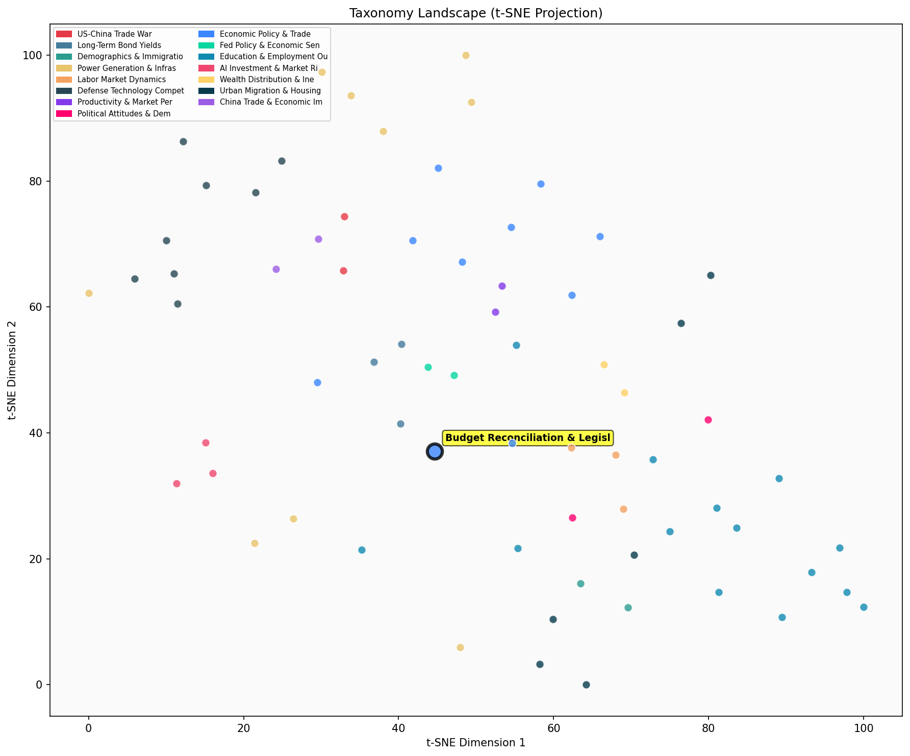

Description
This subcluster focuses on quantitative analysis of legislative proposals, particularly budget reconciliation bills, through various economic modeling approaches. Articles predominantly feature estimates from authoritative sources like the Congressional Budget Office (CBO), Committee for a Responsible Federal Budget (CRFB), Penn-Wharton Budget Model, and Joint Committee on Taxation regarding fiscal impacts, deficit projections, and dynamic scoring methodologies. The content emphasizes technical legislative scoring processes, tax cut analyses, and debt implications of specific bills. Unlike sibling subclusters examining broader economic performance or sectoral policies, this collection centers on granular fiscal modeling and legislative cost estimation techniques used to evaluate pending congressional legislation.
Similarity to All 70 Subclusters
Each cell represents a subcluster. Color intensity shows similarity (blue=low, red=high). Black line marks current subcluster position.
Relationship to Primary Clusters
Average similarity to each of the 15 primary clusters. Larger area = stronger relationship to that cluster.
Taxonomy Landscape
All 70 subclusters positioned by similarity (t-SNE). Current subcluster highlighted with label. Click to enlarge.
Network Connections
Current subcluster at center, connected to related subclusters. Line thickness = similarity strength.
Most Representative Articles
-
1. The CRFB team estimates that the Senate's reconciliation bill will result in a deficit of 7% of GDP
-
2. Matt Klein notes that the House Bill contains unexpectedly large spending cuts. Adding tariff revenu
-
3. .@MarcGoldwein argues the economic assumptions of the House’s reconciliation plan are “unrealistic”
-
4. The Penn-Wharton model finds that, dynamically scored, the Senate-passed reconciliation bill would i
-
5. The House preliminary reconciliation bill would double the growth of the US debt-to-GDP ratio, leavi
Edge Cases (Boundary Articles)
-
1. .@crampell argues that under Kamala Harris’s “price-gouging” proposal, “Supply and demand would no lThis article is borderline because while it discusses a legislative proposal's economic implications, it focuses on critiquing price control mechanisms and market intervention rather than providing the quantitative budget analysis, economic modeling, or legislative scoring that characterizes the assigned cluster. The content aligns more naturally with debates about market efficiency and government intervention in pricing mechanisms, which explains its higher similarity to the Industrial Policy & Market Efficiency Debates cluster.
-
2. In response to a question about GOP proposals for higher taxes on the rich, Trump said, "I think itThis article is borderline because while it mentions tax policy on the wealthy (which relates to budget/revenue considerations), it lacks the quantitative analysis, economic modeling, or legislative scoring elements that define the assigned cluster. The article is more about political commentary on tax policy effects rather than the technical budget reconciliation and analytical focus that characterizes the subcluster.
-
3. .@FedGuy12 argues that “Vice President Harris’ proposed economic plan essentially guarantees stagflaThis article is borderline because while it discusses economic policy analysis (Harris' economic plan), it focuses on predicting macroeconomic outcomes like stagflation and market impacts rather than the quantitative legislative scoring and budget reconciliation modeling that defines the assigned cluster. The content is more aligned with monetary policy and inflation concerns, as suggested by the higher similarity to the "Fed Rate Cuts & Inflation Risk Concerns" cluster.
Original Dendrogram